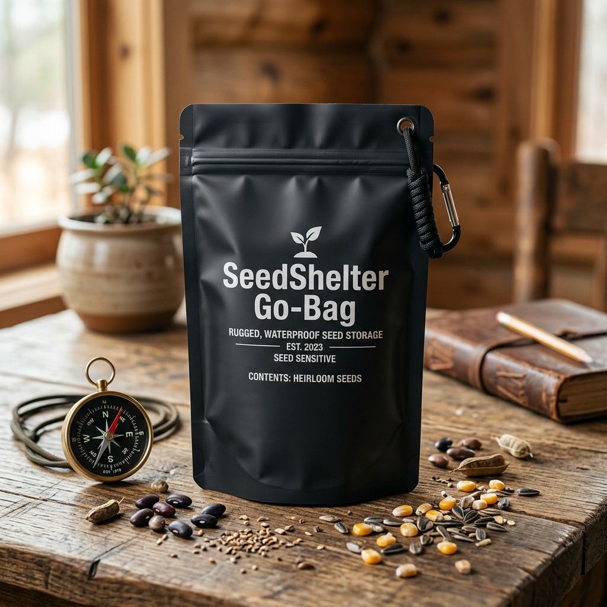
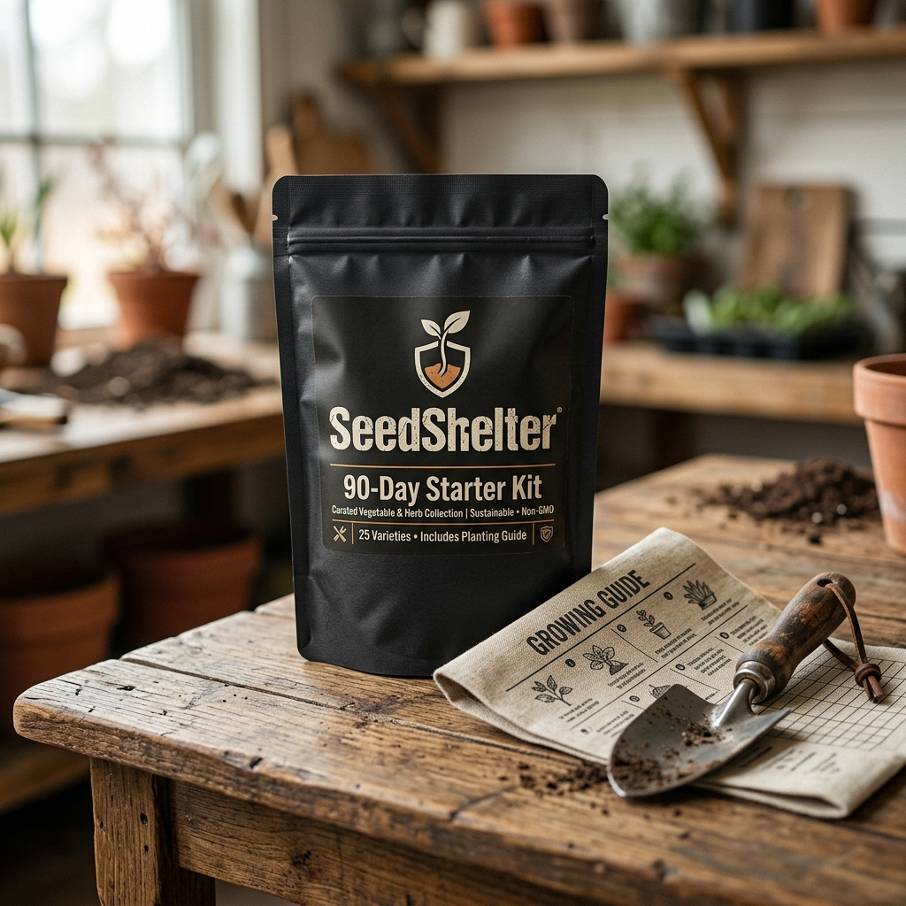
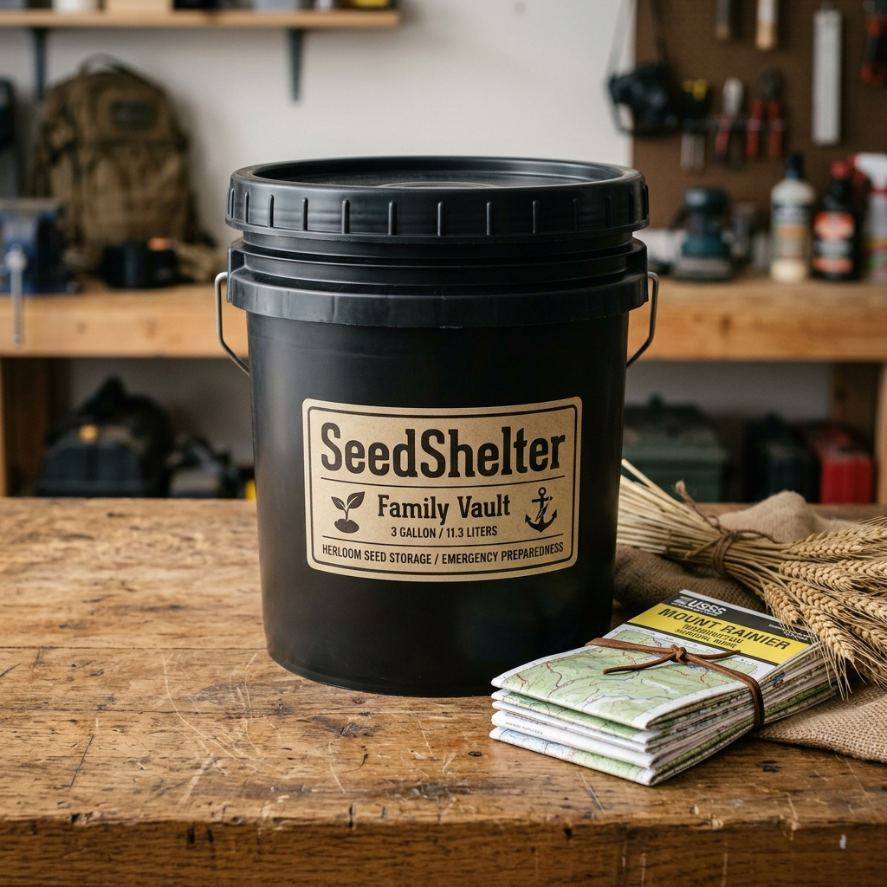
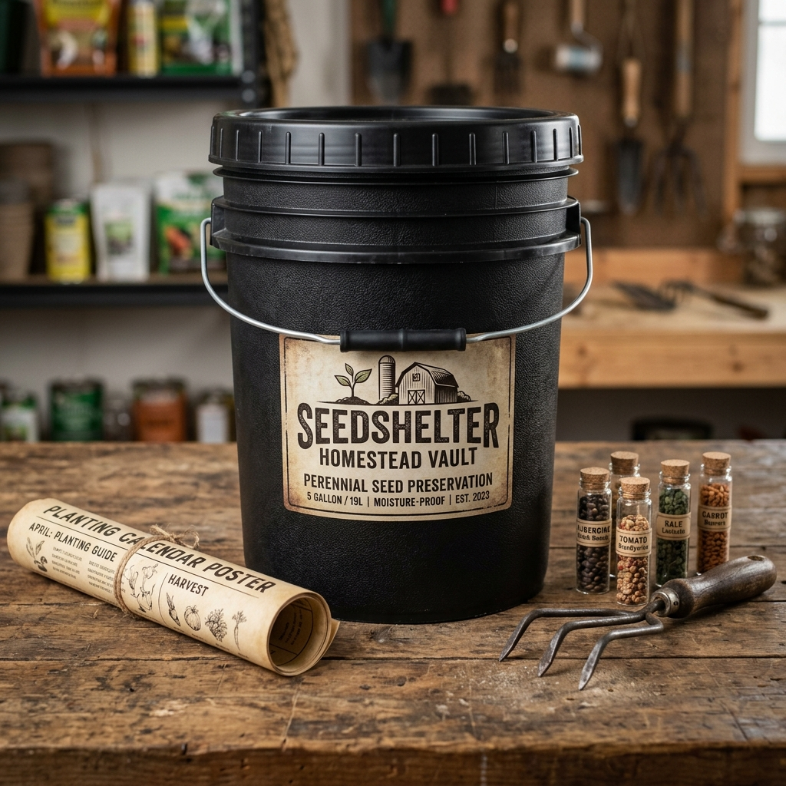
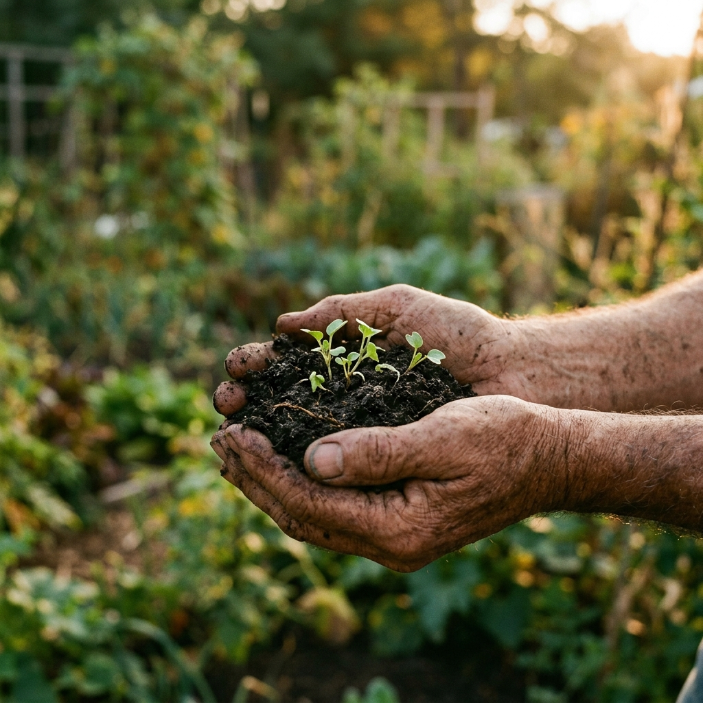

Heirloom survival seed vaults mathematically formulated for complete family nutrition. Not filler. Not lettuce. Real caloric security — engineered from soil science.
Every vault is engineered around a precise macronutrient ratio — real seed counts, real garden math, real caloric yields.

Ultralight Mylar pack for 72-hour bug-out scenarios. First edible harvest in 14 days.
USDA Zones 3–10 · Balcony pots OK · Min. 180 sq ft open ground or equivalent containers
Radish 21d → Spinach 30d → Bush Beans 45d → Kale 50d

One person, 90 days of balanced nutrition. The bridge between impulse prep and family-scale security.
USDA Zones 3–10 · Requires ~580 sq ft (24×24 ft plot) · Raised bed friendly
Fast greens 14–30d → Beans/peas 55d → Corn/squash 100d

3-gallon Gamma-sealed bucket. Full-year seed supply for a family of 5, macro-balanced for real nutritional independence.
USDA Zones 3–10 · ~1,800 sq ft (42×42 ft plot) · Suburban backyard or community garden

5-gallon Gamma-sealed bucket packed to 75%. Maximum variety, maximum yield — multi-year seed bank for serious homesteaders.
USDA Zones 3–10 · ~3,500 sq ft (~1/12 acre) · Rural homestead, large suburban lot, or community plot
SeedShelter was founded on a simple premise: real survival requires real nutrition. We saw an industry flooded with "survival vaults" packed with 100,000 lettuce and celery seeds — crops that offer zero caloric value when it matters most.
That's why every SeedShelter vault is mathematically engineered around a true 50/30/20 macronutrient split. We prioritize dense carbohydrates, complete proteins, and essential fats.

18 heirloom varieties. 100% open-pollinated. Mathematically balanced for survival.
| Variety ↕ | Macro Role ↕ | Cal/lb (dry) ↕ | Days to Harvest ↕ | Seeds/oz | USDA Zones | Included In |
|---|---|---|---|---|---|---|
| Reid's Yellow Dent Grain Corn |
Carbohydrates | 1,600 | 100–120 | ~190 | 3–10 | ✓ 90-Day, Family, Homestead |
| Kennebec Potato Tuber Sets |
Carbohydrates | 350 (fresh) | 80–100 | N/A (Eyes) | 3–9 | ✓ Family, Homestead |
| Butternut Squash Winter Storage |
Carbohydrates | 200 (fresh) | 95–110 | ~100 | 3–10 | ✓ 90-Day, Family, Homestead |
| Turkey Red Wheat Bread Grain |
Carbohydrates | 1,500 | 120+ | ~850 | 3–9 | ✓ Homestead |
| Kentucky Wonder Pole Bean |
Protein | 1,500 | 65–75 | ~100 | 3–10 | ✓ Family, Homestead |
| Provider Bush Bean |
Fast Protein | 1,500 | 50–55 | ~100 | 3–10 | ✓ All Vaults |
| Lincoln Shelling Pea |
Protein | 370 (fresh) | 60–70 | ~90 | 3–9 | ✓ 90-Day, Family, Homestead |
| Mammoth Russian Sunflower |
Fats | 2,550 | 90–100 | ~18 | 3–10 | ✓ 90-Day, Family, Homestead |
| Cherry Belle Radish Root Veg |
Fast Yield | 73 (fresh) | 23–28 | ~3,100 | 3–10 | ✓ All Vaults |
| Bloomsdale Spinach Leafy Green |
Micros/Iron | 105 (fresh) | 35–45 | ~2,500 | 3–10 | ✓ All Vaults |
| German Chamomile Herb / Tea |
Medicinal | — | 60–90 | ~25,000 | 3–9 | ✓ 90-Day, Family, Homestead |
| Echinacea Purpurea Herb / Root |
Medicinal | — | 90–120 | ~6,800 | 3–8 | ✓ 90-Day, Family, Homestead |
Most "survival seed" companies sell 100,000 seeds of lettuce and celery. You cannot survive on lettuce.
Every vault is built around a calculated macronutrient ratio — the exact carbs, protein, and fats a family needs. We publish our nutrition math because we have nothing to hide.
Seeds vacuum-sealed in 7-mil Mylar with oxygen absorbers inside food-grade containers. Properly stored, viability lasts 5–10+ years without refrigeration.
100% open-pollinated heirloom varieties. Harvest seeds from your crops and replant year after year — zero dependency on seed companies, ever.
We refuse to sell you 50,000 celery seeds and call it "survival." Here is how we stack up against the biggest names in the industry.
Honest answers to the most critical survival gardening questions.
True food security means never relying on a seed company again. Here's how the cycle works.
Sow your open-pollinated heirloom seeds in well-prepared soil according to our frost date calendar.
Enjoy the majority of your crop, but leave the healthiest, strongest plants to fully mature and over-ripen on the vine.
Extract, dry, and store the seeds from those over-ripe fruits. Beans and peas are the easiest; just let the pods dry on the plant!
Next season, plant those saved seeds. They will grow into the exact same variety, adapted slightly to your local microclimate.
Join the waitlist for first dibs and an exclusive 15% early-access discount when we launch.